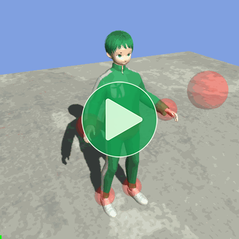
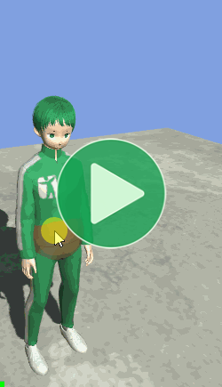
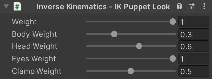
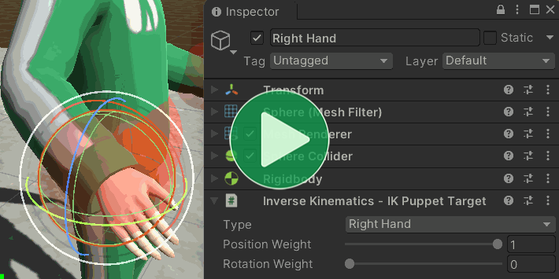

Location: Samples/09 Inverse Kinematics/01 Puppet
Recommended After: Quick Play
Learning Outcomes: in this sample you will learn:
How to control a character's limbs like a puppet.
How make a character look at a specific point.
How use Unity's inbuilt Inverse Kinematics system.
Summary
This sample demonstrates how you can use Unity's Inverse Kinematics system to control a character's limbs like a puppet and have them look at a specific point.
- Unity's inbuilt Inverse Kinematics system only works on Humanoid characters but the Animation Rigging package works on any kind of character.
- Once turned on, using the system with Animancer is exactly the same as it would be with an Animator Controller.
Overview
The code in this sample revolves around the IKPuppet script:
- It references an
IKPuppetLookTargetfor the head. - And four
IKPuppetTargets (one for each limb). - Playing animations isn't the point of this sample, so it just uses
PlayAnimationOnEnablefrom the Quick Play sample to play the Idle animation without needing to do anything in the sample scripts. IKPuppetstill needs a reference to it though, in order to control the IK system.MouseDragallows the player to click and drag the IK targets to move them around.TransformResetterallows the "Reset" button to return the IK targets back to their starting positions.
{kind=link}
Mouse Drag
MouseDrag is a simple script which allows the player to drag the IK targets around:
using System;
using UnityEngine;
public class MouseDrag : MonoBehaviour
{
private Transform _Dragging;
private float _Distance;
protected virtual void Update()
{
When the player clicks, do a raycast from the mouse, grab whatever it hits, and calculate how far away it is:
if (SampleInput.LeftMouseDown)
{
Ray ray = Camera.main.ScreenPointToRay(SampleInput.MousePosition);
if (Physics.Raycast(ray, out RaycastHit hit))
{
_Dragging = hit.transform;
_Distance = Vector3.Distance(_Dragging.position, Camera.main.transform.position);
}
}
As long as they keep holding the button, move the object in line with the mouse ray:
else if (_Dragging != null && SampleInput.LeftMouseHold)
{
Ray ray = Camera.main.ScreenPointToRay(SampleInput.MousePosition);
_Dragging.position = Camera.main.transform.position + ray.direction * _Distance;
}
Otherwise, release the object being dragged:
else
{
_Dragging = null;
}
}
}
That script would work on any object with a Collider component, but the IK targets are the only objects in this scene that have them.
Enabling IK
As explained on the Inverse Kinematics page, you can enable IK in Animancer by setting AnimancerLayer.ApplyAnimatorIK:
[SerializeField] private AnimancerComponent _Animancer;
public class IKPuppet : MonoBehaviour
{
protected virtual void Awake()
{
_Animancer.Layers[0].ApplyAnimatorIK = true;
}
Unity actually implements this setting per state (in AnimationClipPlayable) rather than per layer (in AnimationLayerMixerPlayable), so Animancer simply propogates the value from AnimancerLayer.ApplyAnimatorIK to the AnimancerState.ApplyAnimatorIK of every state connected to that Layer and also to the AnimancerLayer.DefaultApplyAnimatorIK which determines the value for any new states that are created. You can of course set the value for individual states yourself if necessary. The ApplyFootIK setting also works similarly and is demonstrated in the Uneven Ground sample.
That's actually the only Animancer-specific thing in this sample (other than the NamedAnimancerComponent in the scene to play the Idle animation). Everything else works exactly the same as if you were using an Animator Controller.
Center of Mass
When ApplyAnimatorIK is enabled, Unity will call the OnAnimatorIK method every frame in any scripts attached to the same object as the Animator. Note that due to limitations in the Playables API, Unity will only ever pass layerIndex = 0 as the parameter, even if you are using multiple Layers.
The first thing the IKPuppet script does in that method is use the Transform of a target object to control the position and rotation of the character's center of mass:
[SerializeField] private Transform _BodyTarget;
protected virtual void OnAnimatorIK(int layerIndex)
{
_Animancer.Animator.bodyPosition = _BodyTarget.position;
_Animancer.Animator.bodyRotation = _BodyTarget.rotation;
}
That lets the character move around with the target, which isn't very interesting on its own (and could have easily been done without IK):

Look At
To control where the character is looking it tells the IKPuppetLookTarget to update:
[SerializeField] private IKPuppetLookTarget _LookTarget;
protected virtual void OnAnimatorIK(int layerIndex)
{
...
_LookTarget.UpdateAnimatorIK(_Animancer.Animator);
}
The IKPuppetLookTarget is very straightforward, it has various fields which it passes into the SetLookAtWeight method on the Animator:
using UnityEngine;
public class IKPuppetLookTarget : MonoBehaviour
{
[SerializeField, Range(0, 1)] private float _Weight = 1;
[SerializeField, Range(0, 1)] private float _BodyWeight = 0.3f;
[SerializeField, Range(0, 1)] private float _HeadWeight = 0.6f;
[SerializeField, Range(0, 1)] private float _EyesWeight = 1;
[SerializeField, Range(0, 1)] private float _ClampWeight = 0.5f;
public void UpdateAnimatorIK(Animator animator)
{
animator.SetLookAtWeight(_Weight, _BodyWeight, _HeadWeight, _EyesWeight, _ClampWeight);
This script is attached to one of the IK targets in the scene so it passes its own position into SetLookAtPosition:
animator.SetLookAtPosition(transform.position);
}
}
By attaching that script to an object with a Collider (so the MouseDrag script can let us move it around) we get the ability to control where the character looks, with various parameters in the Inspector to control its details:

Hands and Feet
Controlling the character's hands and feet is also quite simple.
IKPuppet has an array of targets, one for each limb:
[SerializeField] private IKPuppetTarget[] _IKTargets;
protected virtual void OnAnimatorIK(int layerIndex)
{
...
for (int i = 0; i < _IKTargets.Length; i++)
{
_IKTargets[i].UpdateAnimatorIK(_Animancer.Animator);
}
}
And another simple script to hold their details (which are different from the look target):
using UnityEngine;
public class IKPuppetTarget : MonoBehaviour
{
[SerializeField] private AvatarIKGoal _Type;// Determines which limb this target applies to.
[SerializeField, Range(0, 1)] private float _PositionWeight = 1;
[SerializeField, Range(0, 1)] private float _RotationWeight = 0;
public void UpdateAnimatorIK(Animator animator)
{
animator.SetIKPositionWeight(_Type, _PositionWeight);
animator.SetIKRotationWeight(_Type, _RotationWeight);
animator.SetIKPosition(_Type, transform.position);
animator.SetIKRotation(_Type, transform.rotation);
}
}
That gives the player control over the character's center of mass, head, hands, and feet:
Limb Rotation
You can also select any of the limb targets in the Hierarchy and use its Inspector to modify its details, including the weight with which it affects the position and rotation. By default, we set the _RotationWeight = 0 since MouseDrag doesn't give us an easy way to control rotations, but if you would like to see it in action you can just increase the weight and use the Transform Inspector of the Scene view gizmo to rotate the object:

Reset
This sample also uses a really simple script to allow a UI Button to reset all the IK targets to their starting positions and rotations.
It gathers all those values in arrays on startup:
public class TransformResetter : MonoBehaviour
{
[SerializeField] private Transform[] _Transforms;
private Vector3[] _StartingPositions;
private Quaternion[] _StartingRotations;
protected virtual void Awake()
{
int count = _Transforms.Length;
_StartingPositions = new Vector3[count];
_StartingRotations = new Quaternion[count];
for (int i = 0; i < count; i++)
{
Transform transform = _Transforms[i];
_StartingPositions[i] = transform.localPosition;
_StartingRotations[i] = transform.localRotation;
}
}
Then when the "Reset" button is clicked it applies the stored values back to each of the target Transforms:
public void ReturnToStartingValues()
{
for (int i = 0; i < _Transforms.Length; i++)
{
Transform transform = _Transforms[i];
transform.localPosition = _StartingPositions[i];
transform.localRotation = _StartingRotations[i];
}
}
}
That method isn't called Reset because that is a MonoBehaviour message (like Awake). Calling it that would cause Unity to call it in Edit Mode when we first add this component and since the _StartingPositions would be null it would throw a NullReferenceException.
What Next?
| Sample | Topic |
|---|---|
| Uneven Ground | Controlling the IK parameters as a character walks to adjust their foot placement on bumpy terrain. |